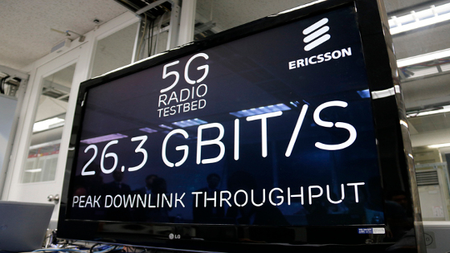

La 4G n'est pas encore entièrement déployée que la 5G est déjà sur toutes les lèvres. L'occasion pour nous de nous intéresser aux promesses du futur réseau très haut débit.
Alors que trouver un signal 4G relève toujours de la chance, particulièrement hors agglomération et en intérieur, industriels, chercheurs, gouvernements, institutions et opérateurs pensent déjà au standard de demain : la 5G.
Le développement de la 5G n’en est qu’à ses débuts, mais cela n’empêche pas les différents acteurs du marché de louer le potentiel exceptionnel de la prochaine génération de réseaux mobiles.
On parle par exemple de débits supérieurs à 10 Gbit/s, de latences inférieures à une milliseconde et d’autonomie pouvant atteindre plusieurs jours, voire plusieurs années pour les appareils les plus économes.
Avec de telles performances, on peut légitimement se demander l’intérêt de développer — en tout cas dès maintenant — un nouveau standard.
C’est que l’enjeu de la 5G n’est pas de répondre aux problèmes d’aujourd’hui — ceux-là ne nécessitent que des efforts financiers et logistiques de la part des opérateurs pour améliorer leur couverture.
Non, c’est pour les utilisations de demain qu’est pensée la 5G : l’ensemble des usages qui subiront de plein fouet les limitations de nos infrastructures.
Pour comprendre l’empressement généralisé autour du futur standard, il faut imaginer l’espace de quelques instants, l’état de la technologie en 2030. Dans quinze ans, des centaines de milliards d’objets connectés, des voitures autonomes, la réalité augmentée et virtuelle, des vidéos toujours mieux définies seront utilisés quotidiennement par des milliards de personnes.
Une telle projection est optimiste ; qui aurait pu imaginer il y a quinze ans la révolution technologique et sociale apportée par l’Internet ubiquitaire ?
Le futur standard est spécifiquement conçu pour cet accroissement démesuré, avec en tête l’idée de créer un réseau à toute épreuve, qui ne craindrait ni la surcharge ni les évolutions et pouvant s’adapter à de nouveaux usages toujours plus exigeants.

Le 12 mai 2013, Samsung a annoncé avoir testé pour la première fois avec succès des techniques de sa future offre de réseau 5G qu'il prévoit pour 2020, avec des débits de données de 1 Gbit/s (1 gigabit par seconde) et allant dans le futur jusqu'à 10 Gbit/s.
En 2015, le Centre de l’université du Surrey, en Grande-Bretagne, a annoncé avoir réussi à atteindre un débit d'1 Tbit/s (1 térabit par seconde, soit 125 Go/s) sur des fréquences au-dessus de 6 GHz.
La même année, le centre mathématiques et algorithmiques de Huawei à Paris propose 5 technologies démontrant des débits compatibles avec les pré-requis de la 5G:
L'ensemble de ces technologies ont permis de démontrer lors d'essais outdoor à Chengdu avec NTT DOCOMO en Chine en octobre 2015 des efficacités spectrales downlink de 50 bit/s/Hz et une capacité du nombre de liens multiplié par 3 en uplink sur des fréquences en dessous de 6 GHz.